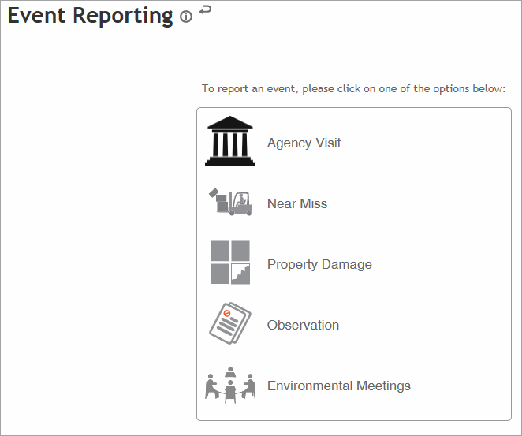
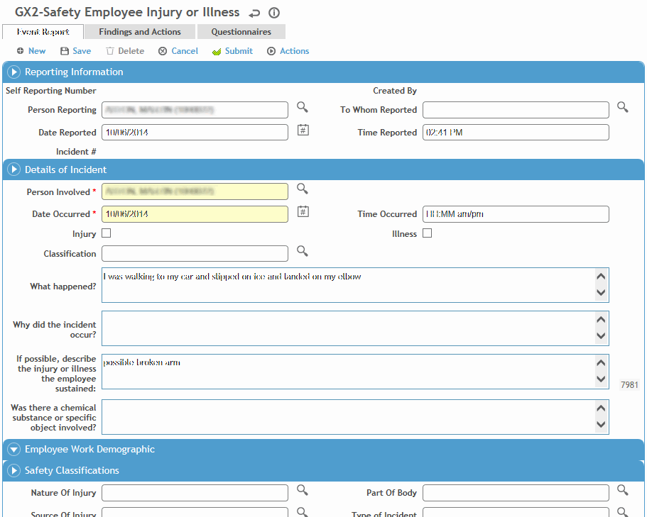
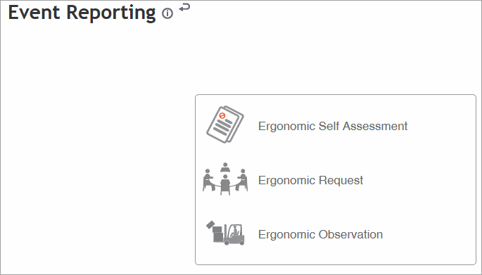
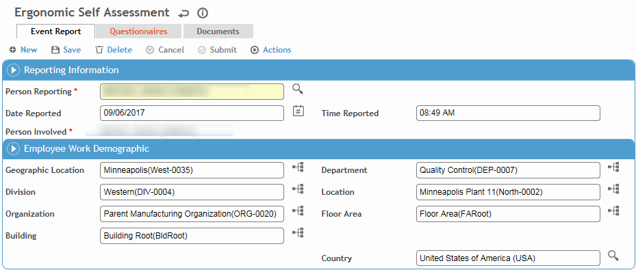
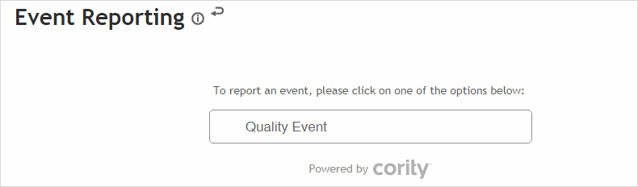
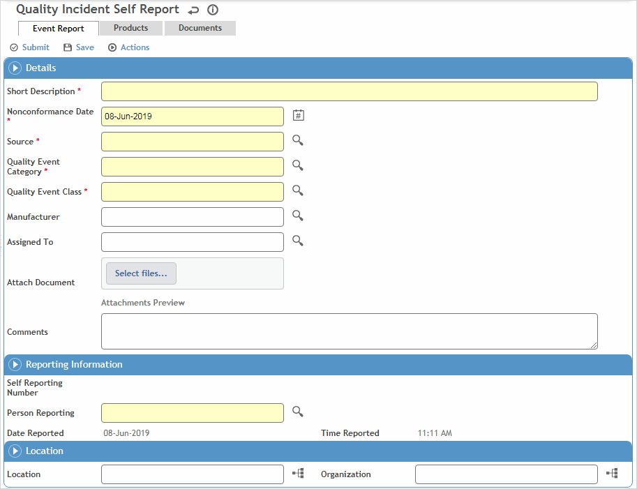

The event report can be completed by one or more people in your organization. You may wish to assign completion of this report to various roles/job positions within your company (for example, the employee may complete the Identification section with the supervisor/investigator completing the Investigation and Analysis sections).
A non-Cority user will access the event report from a link provided to them. For Cority users, to report an event, refer to the appropriate Cloud below:
Safety or Environmental Events
In the Safety menu, click Event Reporting Inbox,
or
in the Environmental menu, click Event Management,
then click New.
Standalone event report users will not see other persons’ events—they will only be able to create an event.
Select the type of event you are reporting:

The standalone selection screens are customizable and may include icons and different choices than shown above. Event report types that appear on the selection screen and their related icons and attributes are defined in the appropriate Report Type look-up table (SafetyEventReportType or EnvironmentalEventReportType). How the event types are arranged on the standalone selection screen is determined by the appropriate Report Selection look-up table (SafetyEventReportSelection or EnvironmentalEventReportSelection).
The standalone selection screen may include one or two configurable logos (top left and top right), defined in the system settings.
The Details screen that appears depends on which type of event is chosen; the Employee Injury or Illness screen is shown:

For Employee’s Injury or Illness (safety events only), enter the following information:
the employee who is reporting the incident (if different from the employee involved)
date and time of injury, date reported, and to whom the incident was reported
all demographic information including the supervisor, and supervisor’s phone number and email address is populated automatically
if the “Enable Filtering of Incident Investigators Based on the Job position of the Employee Involved” system setting is enabled and if the Job Position form was completed in the employee’s demographic record, the primary job position will be populated and the look-up selector will only show the employee’s active positions. The supervisor, manager, and general manager associated with the job position will be populated, provided the Job Position form has been completed for these employees as well.
the employee involved, if not already selected (the employee phone number will populate automatically)
whether the occupational incident is an injury or an illness and details of the incident
nature of injury, part of body affected, and the type of accident
the names of any witnesses and their statements, if applicable
the facility where treatment was given
any recommended actions
If an event is manually posted to a new incident, or is set to auto-post: the GDDLOFB is populated based on the Person Involved, if indicated, otherwise it is based on the Employee Reporting. Similarly, if the “Populate [xxx] based on demographic supervisor hierarchy” system setting is enabled, the Supervisor is populated based on the Person Involved or the Employee Reporting. If the system setting is not enabled, the Supervisor will not be populated.
For Near Miss, Property Damage, or Observation/Other, enter the following information:
the employee who is reporting the incident (the employee phone number will populate automatically) and to whom the incident was reported
date and time of the event, date reported, category (populated according to type of event chosen)
description of what happened and why it occurred
the names of any witnesses and their statements, if applicable
any recommended actions.
Depending on the form layout, if a questionnaire is associated with the selected event type (defined in the SafetyEventReportType or EnvironmentalEventReportType look-up table), it may be included at the bottom of the report (standalone only), or there may be a separate Questionnaire tab.
For more information, see Questionnaires.
If any chemicals or other agents were released as a result of this event, on the Environmental tab record the amount released into the air, soil, and/or water, as well as the amount that was contained.
Use the Witnesses and Contacts tab to link any witnesses or contacts to this incident. Contacts can be selected from the Contact look-up table or entered manually. If you select an employee, their demographic fields will be populated automatically.
On the Stakeholders tab, identify any internal or external stakeholders from the Stakeholder look-up table.
Depending on the form layout you are using, you may be able to attach a document either on a Documents tab or by clicking a camera icon on the Event Report tab. If the form includes an embedded questionnaire, the camera icon is inactive.
If you are not ready to begin the investigation process, click Save to save the information and come back to it later.
If you are ready to begin the investigation process, click Submit (this saves the report as well). A copy of the event report, including a link to the report in the Cority system, is sent to the employee's supervisor if s/he is defined in the application, as well as the email address(es) identified in the IncidentInvestigationEmail look-up table. This can be configured to send to any person or persons in the organization, although normally it is sent to the EHS or Safety Manager responsible for the area where the accident occurred. These recipients must have an account and password in Cority.
In the Ergonomics menu, click Event Reporting Inbox, then click New.
Standalone event report users will not see other persons’ events—they will only be able to create an event.
Select the type of event you are reporting:

The standalone selection screens are customizable and may include icons and different choices than shown above. Event report types that appear on the selection screen and their related icons and attributes are defined in the ErgonomicEventReportType look-up table. How the event types are arranged on the standalone selection screen is determined by the ErgonomicEventReportSelection look-up table.
The standalone selection screen may include one or two configurable logos (top left and top right), defined in the system settings.
The Details screen that appears depends on which type of event is chosen; the Self Assessment screen is shown:

Select the employee who is reporting the event and the person involved.
If a questionnaire is associated with the selected event type (defined in the ErgonomicEventReportType look-up table), it may be included at the bottom of the report (standalone only), or there may be a separate Questionnaire tab.
For more information, see Questionnaires.
On the Stakeholders tab, identify any internal or external stakeholders from the Stakeholder look-up table.
Depending on the form layout you are using, you may be able to attach a document either on a Documents tab or by clicking a camera icon on the Event Report tab. If the form includes an embedded questionnaire, the camera icon is inactive.
If you are not ready to submit the event, click Save to save the information and come back to it later.
If you are finished with the event report, click Submit (this saves the report as well). You are prompted to send an email to notify any individuals about the event report. The email message includes a copy of the event report as well as a link to the report in the Cority system. The email link can only be opened if the user has an account and password in Cority.
Depending on the report type, the event may be automatically posted to a new audit record when it is submitted. Otherwise an ergonomist may review the event report and post it to a new or existing audit record. For more information, see Reviewing Events.
In the Quality menu, click Event Inbox, then click New.
Standalone event report users will not see other persons’ events—they will only be able to create an event.
Select the type of event you are reporting:

The standalone selection screens are customizable and may include icons and different choices than shown above. Event report types that appear on the selection screen and their related icons and attributes are defined in the QualityEventReportType look-up table. How the event types are arranged on the standalone selection screen is determined by the QualityEventReportSelection look-up table.
The standalone selection screen may include one or two configurable logos (top left and top right), defined in the system settings.
The Details screen that appears depends on which type of event is chosen.

Enter a Short Description of the event, and the Nonconformance Date.
Select the Source, Category, and Class of the event.
Select the Person Reporting the event.
Identify any associated suppliers’ products on the Products tab.
Attach document(s) either on the Event Report tab or the Documents tab.
On the Stakeholders tab, identify any internal or external stakeholders from the Stakeholder look-up table.
If you are not ready to submit the event, click Save to save the information and come back to it later.
If you are finished with the event report, click Submit (this saves the report as well). A notification is sent to your organization’s Quality representatives for review. The email message includes a copy of the event report as well as a link to the report in the Cority system. The email link can only be opened if the user has an account and password in Cority. For more information, see Reviewing Events.